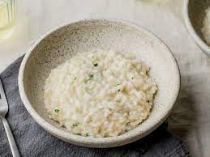

Risotto

Description
Risotto (/rɪˈzɒtoʊ/, Italian: [riˈsɔtto, -ˈzɔt-], from riso meaning "rice") is a northern Italian rice dish cooked with broth until it reaches a creamy consistency. The broth can be derived from meat, fish, or vegetables. Many types of risotto contain butter, onion, white wine, and parmesan cheese.
Ingredients
- Risotto rice
- Onion
- White wine
- Caldo de galinha
- Butter
- Cheese
Steps
- Dourar a cebola no azeite ( até ela ficar transparente, não deixar escurecer).
- Colocar o arroz e mexer durante uns 2 minutos.
- Jogar o vinho e mexer até ele evaporar.
- Fogo baixo - ATENÇÃO
- Depois que o vinho secar, ir colocando o caldo de galinha QUENTE - 3 conchas de cada vez.
- Mexer sempre e colocar mais caldo toda vez que ele secar.
- Quando o arroz já estiver macio, colocar o gorgonzola em pedaços, mexendo até derreter.
- Desligar o fogo.
- Colocar a manteiga.
- Jogar o parmesão por cima.